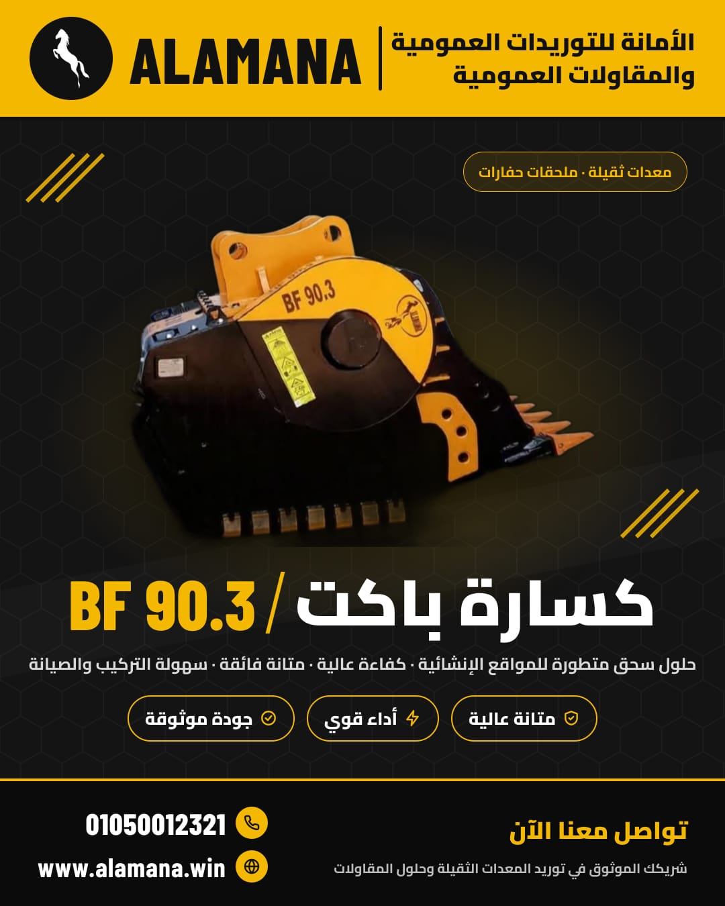

المنتجات الأسمنتية
طوب أسمنتي، بلوك، إنترلوك، وبردورة.

حفر وإحلال تربة وتكسير داخل الموقع، ونقل وتأجير معدات وتوريد كل مواد البناء، في العين السخنة والجلالة وجميع المحافظات.
الأمانة للتوريدات العمومية والمقاولات العمومية شركة رائدة في مجال التوريدات والمقاولات، خاصةً في منطقة العين السخنة، ولنا سابقة أعمال في جميع المحافظات.
تعاملنا مع كثير من المطورين العقاريين والشركات الكبرى في مشروعات مثل مرتفعات الجلالة وكارنيليا وماجادا وبي ماونت السخنة، ونمتلك أسطولًا من الحفارات والبلدوزرات واللودرات والقلابات وفريق عمل ميداني محترف.

ننفذ أعمال الموقع بالترتيب، ونسلّم الطبقة للمكتب الاستشاري بالمواصفات المطلوبة.

أعمال الحفر والتكسير في الصخر بالبلدوزرات والحفارات المجهزة بالكسارات الهيدروليكية.

تكسير ناتج الحفر بالباكيت كراشر وإنتاج السن المتدرج في نفس الموقع.

توريد السن والتربة والمياه والخلط والتشغيل على الطبقة، ثم تسليمها للمكتب الاستشاري.
وخدمات مساندة لكل موقع

قلابات ولودرات لنقل ناتج الحفر والمواد.

حفارات وبلدوزرات ولودرات بمشغليها.

حوائط ساندة وتكسيات بالدبش والحجر الطبيعي.

BF 90.3 3D اسحب لتدوير الكاسور 360°باكيت بنفس شكل باكيت الحفار، لكن فيه مواتير وهيدروليك ومكونات كسارة، فيكسّر المواد الخام شديدة الصلابة مباشرةً في الموقع.
السن الذي ينتجه في موقعك
يتحدد سعر التأجير حسب حجم السن المطلوب، بالمتر أو بالطن حسب الاتفاق.
نوفر بيع الباكيت كراشر مع الضمان والصيانة، ونساعدك تختار الأنسب لحفارك ولطبيعة الخامات في موقعك.
كل ما يحتاجه موقعك من مواد، يصل إلى المواقع الصحراوية البعيدة.
طوب أسمنتي، بلوك، إنترلوك، وبردورة.

السن والرمل والأسمنت وجميع مواد البناء.

للحوائط الساندة والأسوار والتكسيات.

مياه التشغيل للمواقع التي لا تتوفر فيها مياه.
تعاملنا مع كثير من المطورين العقاريين والشركات الكبرى، وهذه بعض أعمالنا السابقة.
| الشركة | المشروع | الأعمال |
|---|---|---|
| شبه الجزيرة للإنشاءات | مرتفعات الجلالة | حفر وإحلال وتوريدات |
| الإسكندرية للإنشاءات | مرتفعات الجلالة | التوريدات |
| فرست للإنشاء والتعمير | كارنيليا | تدبيش وحفر وإحلال وتوريدات |
| إيوان للاستثمار العقاري | ماجادا | تدبيش وحفر وإحلال وتوريدات |
| بنيان مصر للتنمية السياحية | ماجادا | تدبيش وحفر وإحلال وتوريدات |
| المطورون العقاريون مافين | بي ماونت | تدبيش وحفر وإحلال وتوريدات |
| بيترهاوس | الجلالة | التوريدات |
| الروضة | مرتفعات الجلالة | حفر وإحلال وتوريدات |
| دار الشروق | منتجع الجلالة الساحلي | التوريدات |
| أجنا | كارنيليا | تدبيش وحفر وإحلال وتوريدات |
| جيتس كون للمقاولات | PRIVE | مقاولات |


الأمانة (ALAMANA) شركة مصرية متخصصة في المقاولات العمومية والتوريدات، تعمل بشكل أساسي في العين السخنة والجلالة ولها سابقة أعمال في جميع المحافظات. تنفذ الحفر وإحلال التربة والتكسير داخل الموقع والنقل وتأجير المعدات والتدبيش، وتورد السن والرمل والأسمنت والدبش والمنتجات الأسمنتية والمياه.
باكيت كراشر بنفس شكل باكيت الحفار لكن فيه مواتير وهيدروليك ومكونات كسارة، يُركَّب على الحفار ويكسّر المواد الخام شديدة الصلابة مباشرةً في الموقع، وينتج سن متدرج (سن 3 وسن 6 وسن 11 وأكبر).
لا يحتاج مولد ولا سولار لتشغيله، ولا لودر لتغذيته، ويتحرك مع الحفار بين أماكن الحفر وأماكن الاحتياج للسن. ويوفر تكلفة نقل مخلفات الحفر لأنها تُكسَّر في نفس المنطقة، ويوفر تكلفة شراء السن لأنه ينتجه في الموقع.
نعم. التأجير يتحدد سعره حسب حجم السن المطلوب، بالمتر أو بالطن حسب الاتفاق. والبيع متاح مع الضمان والصيانة، ونساعدك تختار الأنسب لحفارك ولطبيعة الخامات في موقعك.
نعمل بشكل أساسي في العين السخنة ومرتفعات الجلالة، ولنا سابقة أعمال في جميع المحافظات، ونورد مياه التشغيل للمواقع الصحراوية التي لا تتوفر فيها مياه.
من عملائنا: شبه الجزيرة للإنشاءات والروضة في مرتفعات الجلالة، وفرست للإنشاء والتعمير وأجنا في كارنيليا، وإيوان وبنيان مصر في ماجادا، ومافين في بي ماونت السخنة، وغيرهم.
اتصل على 01050012321 أو راسلنا واتساب أو على info@alamana.win أو alamanawork2024@hotmail.com، أو املأ نموذج عرض السعر بالأسفل. مقرنا: شارع الجمهورية، برج المدينة المنورة، الدور الثامن، شقة 23، الصف، الجيزة.
املأ البيانات وهيتفتح واتساب برسالة جاهزة لفريق الأمانة، أو كلّمنا مباشرة.